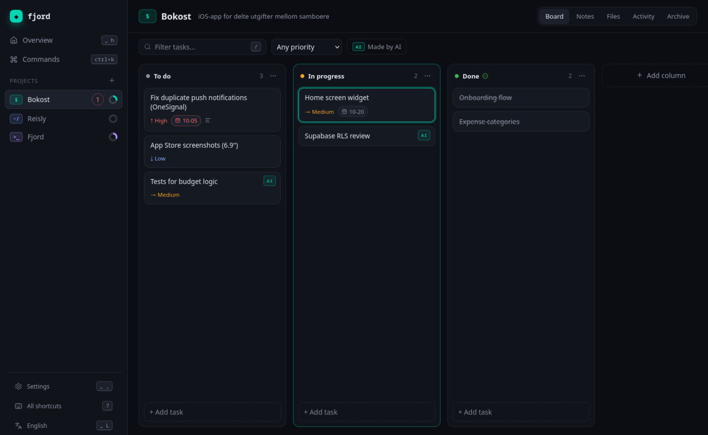
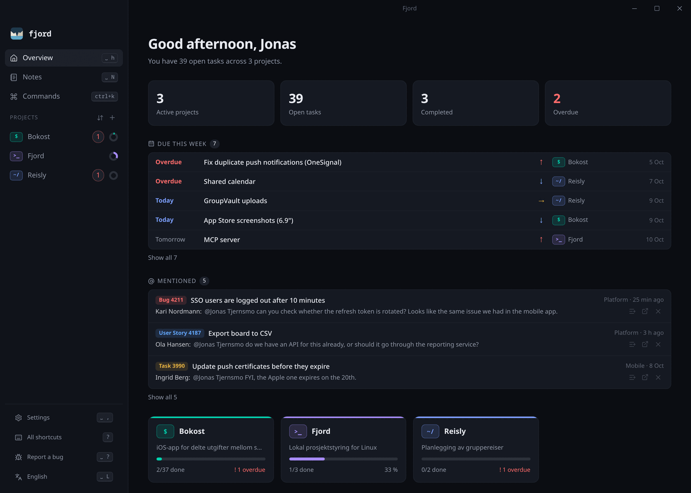
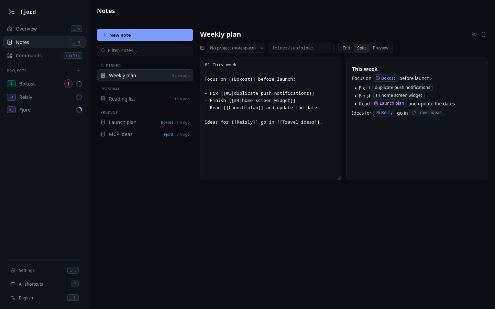
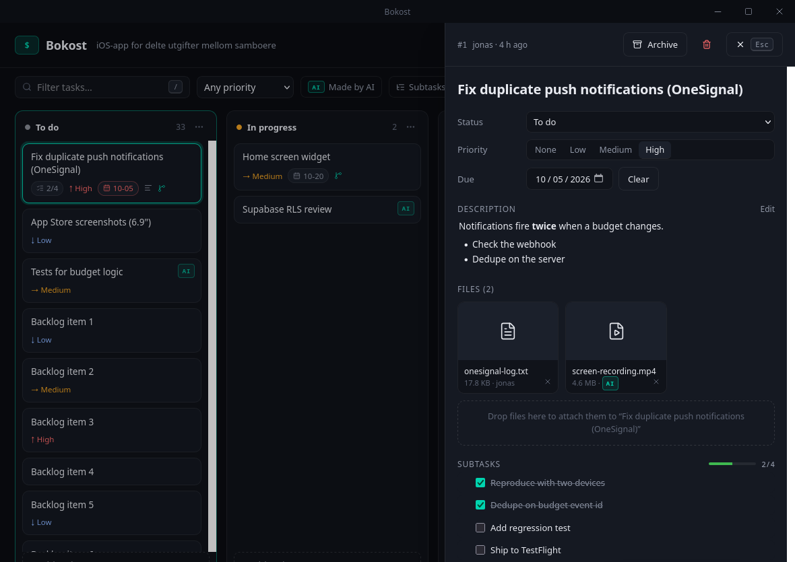
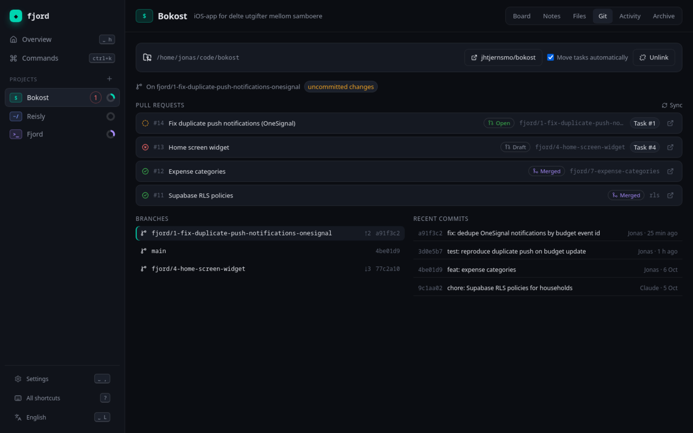
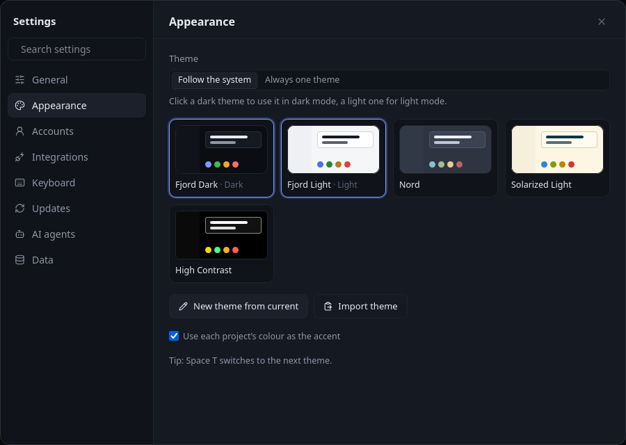

Fjord is a desktop app for keeping track of projects.
Kanban boards, notes and files, stored in one SQLite file on your own computer. No account, no server. Free and open source.

Why I made it
I have a handful of side projects going at any time, and I wanted one place for their tasks, notes and files that opens instantly and doesn't live in a browser tab. Most tools I tried were either online-only or did far more than I needed.
So Fjord is small on purpose. It runs locally, works fine without the mouse, knows about my Git repos, and lets my AI agent help out on the same board. If that sounds like what you want too, give it a try.
Jonas
What it does
- Boards with your own columns, priorities, due dates and drag and drop. Right-click a project to change its icon or colour.
- Subtasks, so a big task can be broken into steps. The card shows how far along it is.
- Notes in markdown, inside a project or on their own. Link to anything with
[[Project]],[[#12]]or[[Another note]], and see what links back. Tables and Mermaid diagrams work too. - Files attached to projects or tasks, copied into Fjord so they don't go missing.
- Search across tasks, notes and file names.
- Themes: five to pick from, or make your own colours, text size and spacing.
- Updates itself when a new version is out. Settings shows which version you have.
- English and Norwegian.
New in 0.2.15
- The Overview lists what's due this week across all your projects: overdue tasks first, then by day and priority.
- The Overview works with the keyboard too. j and k move between due tasks, mentions and projects, Enter opens, a turns a mention into a task and x dismisses it.
- Space G creates a GitHub repository for the current project.
- The suggested branch name for a task can be edited before the branch is created.
Everything else is in the changelog.



Keyboard
Everything works with the mouse, but you don't have to touch it. Press Space and a small menu shows what you can do next.
| Space | Leader key, with a menu of what comes next |
| Ctrl K | Command palette and search |
| h j k l | Move around the board |
| H L | Move a task to the previous or next column |
| / | Filter the board |
| ? | All shortcuts |
Every binding can be changed in keymap.json.
Git, GitHub and Azure DevOps
Link a project to a local repository and each task can get its own branch, named the usual way: feat/12-add-login, fix/7-crash-on-start. You pick the type, or Fjord guesses it from the task. A task can also be linked to a branch you already have, and several tasks can share one.
Fjord shows open pull requests with their CI status, can open a PR from a task, and moves the task to Done when the PR is merged. This works for repositories on GitHub and on Azure DevOps. If access is refused, it tells you why instead of just showing an error code.
Sign in to GitHub from the settings with your browser, or let Fjord use gh. For Azure DevOps you can use az login or a token. Tokens are kept in your system's keychain, not in Fjord's files.
If you work in Azure Boards, Fjord can also pull in the work items assigned to you, so they show up as tasks in the right project. Each one lands in the column with the same name as its state in Azure, child items become subtasks, and you can read the discussion on the work item without leaving Fjord. Items finished in the last month come along too, and you get a notification when something new arrives.

Make it yours
Pick a theme, let it follow your system's light and dark mode, or make your own. Every change shows up while you adjust it, and themes can be shared as a bit of JSON.

AI agents
Fjord includes an MCP server, so an agent like Claude can read your boards and notes, add and move tasks, write notes and open pull requests. It can't delete anything, and every change it makes is marked with who made it.
For example, new work items from Azure Boards can land in Fjord, and an agent can go through them on a schedule, write a short summary and split the bigger ones into subtasks.
$ claude mcp add fjord -- fjord mcp
There's also a plain command line tool, fjord, if you'd rather script it yourself.
Download
| Windows | Installer (.exe) or .msi |
| macOS | Apple Silicon or Intel |
| Linux | AppImage, .deb or .rpm |
On a Mac you can also use Homebrew: brew install --cask jhtjernsmo/fjord/fjord. The command line tool is brew install jhtjernsmo/fjord/fjord-cli.
The macOS app is signed and notarized by Apple, so it opens like any other app. The Windows builds aren't code-signed yet: if SmartScreen warns you, click "More info" and then "Run anyway". Older versions are on the releases page. See the code signing policy.
Questions
- Is Fjord free?
- Yes. It's free and open source under MIT or Apache-2.0, with no paid tier and no account.
- Does it work offline?
- Yes. Boards, notes and files are on your own disk, so everything works without a connection. Only the GitHub and Azure DevOps features need the internet.
- How is it different from Trello, Jira or Linear?
- Those are online services built for teams. Fjord is a desktop app for one person: your data stays in a file on your computer, it opens instantly, and it's made to be used from the keyboard. There's no sharing or sync between machines.
- Can an AI agent use it?
- Yes. Fjord comes with an MCP server, so Claude and other MCP clients can read and update your boards and notes. It can't delete anything. See AI agents.
- Where is my data?
- In one folder:
~/.local/share/fjordon Linux,%APPDATA%\fjordon Windows and~/Library/Application Support/fjordon macOS. Copy it to back up. - Does it send anything anywhere?
- No accounts and no telemetry. It only goes online to check for updates (you can turn that off) and, if you link a repo or turn on the Azure Boards import, to talk to GitHub or Azure DevOps. Details under Privacy.
- What's it built with?
- Rust, Tauri, SQLite and React. Licensed MIT or Apache-2.0.
- Found a bug?
- Please open an issue.
Privacy
Fjord has no accounts, no telemetry and no analytics, and I don't collect any data about you. Everything you write stays in the data folder on your own machine.
The app only connects to other systems in these cases:
- Checking for updates: it asks GitHub Releases whether there's a newer version. This is on by default and can be turned off in Settings → Updates.
- Git, GitHub and Azure DevOps: only for repositories and organizations you link yourself, using the token you give it. Tokens are kept in your operating system's credential store.
- Links open in your browser when you click them. "Report a bug" opens a new GitHub issue with the app version and operating system filled in, and nothing is sent until you submit it.
The command line tool and the MCP server for AI agents run locally. They only talk to GitHub or Azure DevOps when you or your agent run a command that needs it, such as syncing pull requests.
Code signing policy
Every release is built by GitHub Actions from the tagged commit in the public repository, and approved by hand before it's published. The macOS app is signed with an Apple Developer ID and notarized by Apple. The Windows builds aren't code-signed yet; the updater still checks a signature on every update before installing it.
- Committers and reviewers
- Jonas Hollund Tjernsmo
- Approvers
- Jonas Hollund Tjernsmo
Changes reach the main branch only through pull requests that pass the required checks. See the privacy policy above for what the app sends over the network.